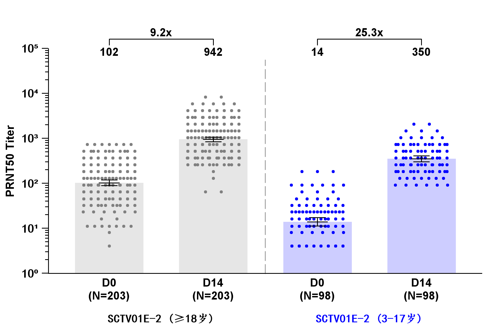
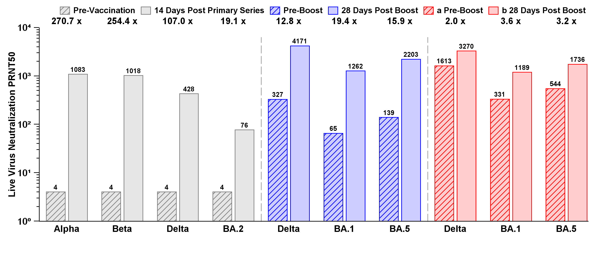
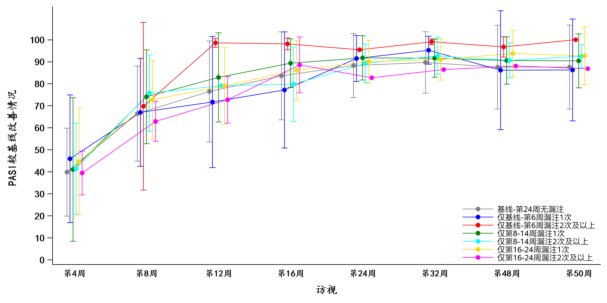
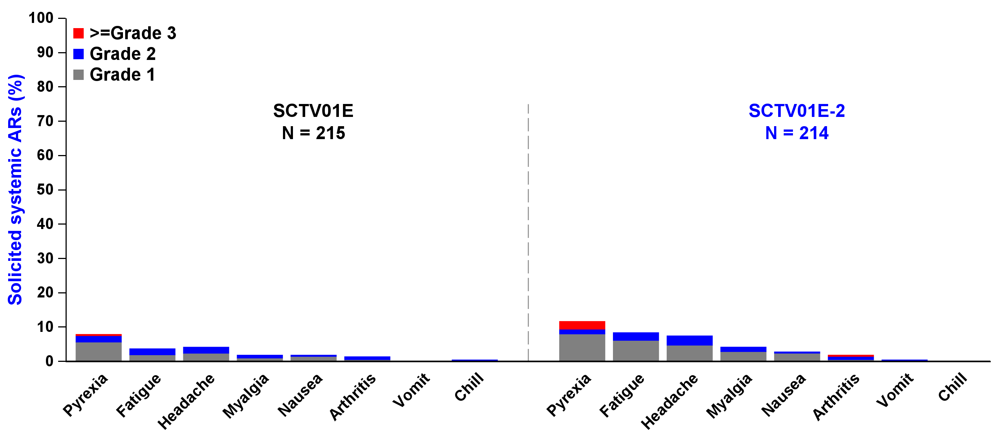
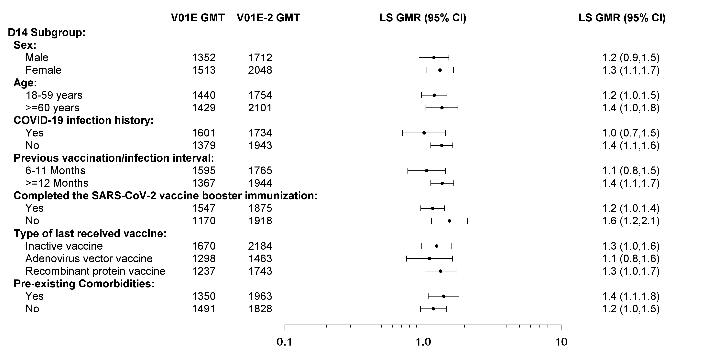
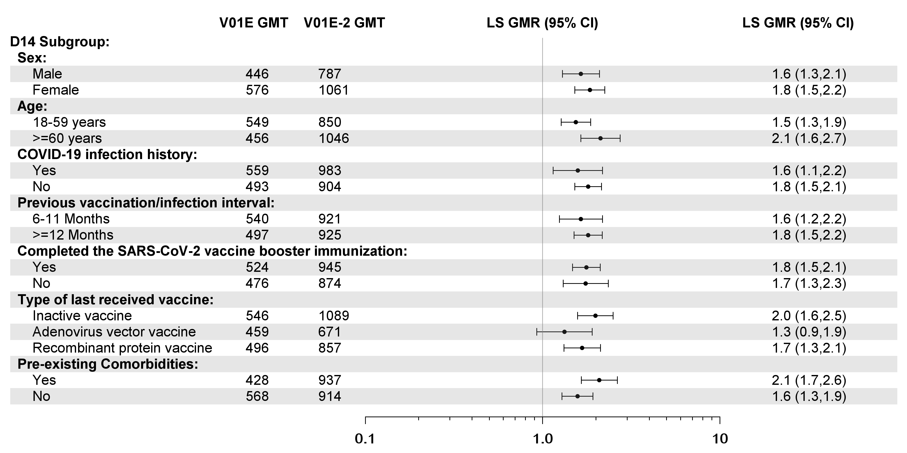

GTL
GTL(Graph Template Language)
proc template无法更新
ods path(prepend) work.templat(update);GTL控制分组属性
通过discreteattrmap预定义分组属性

discreteattrmap name="backcolor";
value "1"/ fillattrs=(color=gray ) markerattrs=(color=gray symbol=circlefilled) lineattrs=(color=gray);
value "2"/ fillattrs=(color=blue ) markerattrs=(color=blue symbol=circlefilled) lineattrs=(color=blue);
enddiscreteattrmap;
discreteattrvar attrvar=backgroup var=grp attrmap="backcolor";并在后续代码中调用该属性，如group=backgroup选项：
scatterplot x=xp1 y=aval / name='scatter' markerattrs=( size=3 ) group=backgroup;通过proc template修改style重定义属性
使用discreteattrmap无法分组实现带有画线的属性，如下图：

使用proc template修改style，可以设置多个GraphData1-GraphDataN为多个分组设置不同属性，其中的fillpattern可以设置柱状图中的划线。另外GTL默认输出的图形的坐标轴往往是灰色的线条，而sgplot中默认的是黑色实线，可设置 contrastcolor=black改成黑色实线。
proc template;
define style tlout;
parent=styles.htmlblue;
style graphwalls from graphwalls /
frameborder=on
linestyle=1
linethickness=1px
backgroundcolor=GraphColors("gwalls")
contrastcolor= white;
style graphaxislines from graphaxislines /
linestyle=1
linethickness=1px
contrastcolor=black;
replace GraphFonts
"Fonts used in graph styles" /
'NodeDetailFont' = ("Arial",7pt,bold)
'NodeLinkLabelFont' = ("Arial",9pt,bold)
'NodeInputLabelFont' = ("Arial",9pt,bold)
'NodeLabelFont' = ("Arial",9pt,bold)
'NodeTitleFont' = ("Arial",9pt,bold)
'GraphDataFont' = ("Arial",7pt,bold)
'GraphUnicodeFont' = ("Arial",9pt,bold)
'GraphValueFont' = ("Arial",9pt,bold)
'GraphLabel2Font' = ("Arial",10pt,bold)
'GraphLabelFont' = ("Arial",10pt,bold)
'GraphFootnoteFont' = ("Arial",10pt,bold)
'GraphTitleFont' = ("Arial",11pt,bold)
'GraphTitle1Font' = ("Arial",14pt,bold)
'GraphAnnoFont' = ("Arial",10pt,bold);
replace GraphData1 /
fillpattern = "R1"
color = grey
contrastcolor = grey
;
replace GraphData2 /
fillpattern = "NA"
color = grey
contrastcolor = grey
;
replace GraphData3 /
fillpattern = "R1"
color = blue
contrastcolor = blue
;
replace GraphData4 /
fillpattern = "NA"
color = blue
contrastcolor = blue
;
replace GraphData5 /
fillpattern = "R1"
color = red
contrastcolor = red
;
replace GraphData6 /
fillpattern = "NA"
color = red
contrastcolor = red
;
end;
run;GTL控制X,Y轴属性
Y轴实现101, 102 ,103 …
首先定义这一类数字在10的右肩上的format
proc format;
value yfmt
1="10(*ESC*){Unicode '2070'x}"
10="10(*ESC*){Unicode '00B9'x}"
100="10(*ESC*){Unicode '00B2'x}"
1000="10(*ESC*){Unicode '00B3'x}"
10000="10(*ESC*){Unicode '2074'x}"
100000="10(*ESC*){Unicode '2075'x}"
;
run;并在yaxisopts语句中定义刻度值的属性字体为Arial Unicode MS，最终呈现结果如GTL控制分组属性中的图所示。
yaxisopts=(offsetmax=0 offsetmin=0 display=( LINE ticks tickvalues) type=log
logopts=( viewmin=1 viewmax= 10000 base=10 tickintervalstyle=logexpand minorticks=true tickvalueformat=yfmt.)
labelattrs=( size=9 color = black weight=bold) tickvalueattrs=(size=10pt weight=bold family='Arial Unicode MS'));GTL绘制折线图
seriesplot plot绘制折线图，groupdisplay=cluster可以控制折线在访视点左右散开，以及设置clusterwidth控制左右散开的程度。

proc template;
define statgraph sgdesign;
begingraph;
layout overlay / walldisplay=(FILL)
xaxisopts=( label=('访视') labelattrs=(size=12 family = "楷体" weight=bold)
discreteopts=(tickvaluefitpolicy=splitrotate) offsetmin=0.04 offsetmax=0.04
tickvalueattrs=(size=10pt weight=bold family='楷体')
display=(label LINE TICKVALUES ))
yaxisopts=( label=('PASI较基线改善情况') labelattrs=(size=12 family = "楷体" weight=bold)
linearopts=(viewmin=0 tickvaluesequence=( start=0 end=100 increment=10))
tickvalueattrs=(size=10pt weight=bold family='Arial Unicode MS')
display=(label LINE ticks tickvalues));
seriesplot x=avisit y=mean / group=anagrpn name='series' yerrorlower=lmean yerrorupper=umean groupdisplay=cluster clusterwidth=0.3 connectorder=xaxis display=(markers) lineattrs=(pattern=SOLID );
discretelegend 'series' / opaque=false border=false halign=right valign=bottom displayclipped=true across=1 order=rowmajor location=inside;
endlayout;
endgraph;
end;
run;GTL绘制柱状图
barchart plot绘制柱状图，groupdisplay=Stack设置为堆积图

proc template;
define statgraph sgdesign;
begingraph/ pad=(left=30);;
discreteattrmap name="barcolor";
value "1"/ fillattrs=(color=gray ) ;
value "2"/ fillattrs=(color=blue ) ;
value "3"/ fillattrs=(color=red ) ;
enddiscreteattrmap;
discreteattrvar attrvar=bargroup var=atoxgrn attrmap="barcolor";
legenditem type=fill name="fill1" / fillattrs=(color=gray) filldisplay=(fill) label="Grade 1";
legenditem type=fill name="fill2" / fillattrs=(color=blue) filldisplay=(fill) label="Grade 2";
legenditem type=fill name="fill3" / fillattrs=(color=red) filldisplay=(fill) label=">=Grade 3";
layout overlay / walldisplay=(FILL)
xaxisopts=( discreteopts=( tickvaluefitpolicy=ROTATE tickvaluerotation=diagonal2 tickvalueformat=$xfmt. /*tickvaluefitpolicy=rotatealways tickvaluerotation= vertical*/)
tickvalueattrs=(size=10pt weight=bold) display=( LINE TICKVALUES ))
yaxisopts=(offsetmax=0 offsetmin=0 display=( LINE ticks tickvalues) labelattrs=(size=14 weight=bold) labelfitpolicy=SPLITALWAYS labelsplitchar="@"
tickvalueattrs=(color=black size=10pt weight=bold family='Arial')
linearopts=( viewmin=0.0 viewmax=100.0 tickvaluesequence=(start=0 end=100 increment=10.0) )
);
barchart category=order response=pct / group=bargroup name='bar' display=(fill) stat=mean barwidth=0.85 groupdisplay=Stack clusterwidth=1.0 grouporder=data ;
discretelegend 'fill3' 'fill2' 'fill1'/ opaque=true border=false halign=left valign=top displayclipped=true across=1 order=rowmajor location=inside valueattrs=(size=12pt);
annotate;
endlayout;
endgraph;
end;
run;GTL绘制森林图
forest plot绘制森林图，其他的所有label通过annotation实现。

proc template;
define statgraph sgdesign;
begingraph / pad=(top=40 bottom=5);
layout overlay / walldisplay=(FILL)
yaxisopts=(display=NONE reverse=true offsetmax=0.01 offsetmin=0.01 linearopts=( viewmin=0
viewmax=23
))
xaxisopts=(offsetmin=0.4 offsetmax=0.2 display=(TICKS TICKVALUES) type=log logopts=( viewmin=0.1 viewmax= 10
base=10 tickintervalstyle=logexpand minorticks=true tickvalueformat=xfmt.) tickvalueattrs=(size=12pt weight=bold family='Arial Unicode MS'));
scatterplot x=means y=yord / xerrorupper=yerru xerrorlower=yerrl markerattrs=(size=5 symbol=circlefilled color=black) errorbarattrs=(color=black thickness=1);
referenceline x=1 /datatransparency=0.4;
annotate;
endlayout;
endgraph;
end;
run;如果想要间隔一行加一条浅色的背景色块，可以通过referenceline y=ref /datatransparency=0.8 lineattrs=(thickness=20 color=grey);实现。

proc template;
define statgraph sgdesign;
begingraph / pad=(top=40 bottom=5);
layout overlay / walldisplay=(FILL)
yaxisopts=(display=NONE reverse=true offsetmax=0.01 offsetmin=0.01 linearopts=( viewmin=0
viewmax=23
))
xaxisopts=(offsetmin=0.4 offsetmax=0.2 display=(TICKS TICKVALUES) type=log logopts=( viewmin=0.1 viewmax= 10
base=10 tickintervalstyle=logexpand minorticks=true tickvalueformat=xfmt.) tickvalueattrs=(size=12pt weight=bold family='Arial Unicode MS'));
scatterplot x=means y=yord / xerrorupper=yerru xerrorlower=yerrl markerattrs=(size=5 symbol=circlefilled color=black) errorbarattrs=(color=black thickness=1);
referenceline x=1 /datatransparency=0.4;
referenceline y=ref /datatransparency=0.8 lineattrs=(thickness=20 color=grey);
annotate;
endlayout;
endgraph;
end;
run;